1032B16 toothed timing belt - r r with engine removed
- Path
- Procedures > 10 ENGINE > 1032 TIMING SYSTEM > 1032B BELT TIMING SYSTEM > 1032B16 toothed timing belt - r r with engine removed
- Kind
- repair procedure (removal / refitting; the operation number is the code)
- Applies to
- all engines; all production periods
- Interactive page
- https://sloeber94.github.io/elrnDB-fDbl/en/#/2585294
Applies to: all engines; all production periods
 Removing
Removing
 Refitting
Refitting1004D40 engine - position on stand and remove
1. Undo bolt (1a) and remove oil dipstick assembly.
2. Remove timing belt upper guard (2a) and lower guard (2b).
3. Disconnect the electrical connection, release the electrical cable for the rpm and T.D.c. sensor from the fastenings on the protective timing belt covers and remove the rpm sensor.
 | Name | Connector |
|---|---|---|
- | RPM sensor | K46 |
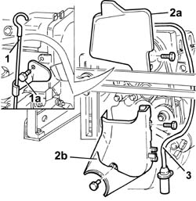
Applies to: all engines; all production periods
Removing
Refitting1004D40 engine - position on stand and remove
Disconnect the electrical connections from the ignition coils.
| Name | Connector |
|---|---|---|
- | Ignition 'coil | A30 |
1. Disconnect the supply connections for the spark plugs.
2. Undo the bolts fixing the ignition coils from the mounting bracket.
3. Remove the ignition coils complete with spark plug high tension leads.
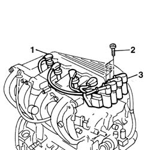
Applies to: all engines; all production periods
Removing
Refitting1004D40 engine - position on stand and remove
1. Undo the bolt (1a) and remove the fixed single drive pulley (1b).
2. Undo the bolts (2b) and remove the auxiliary drive pulley (2b).
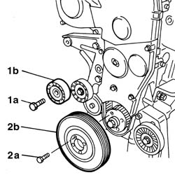
Applies to: all engines; all production periods
1. Undo the bolts (1a) and remove the crankshaft component auxiliary drive pulley.
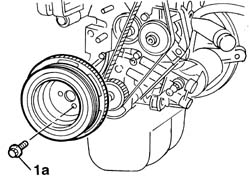
Applies to: all engines; all production periods
1. Turn the crankshaft in its normal direction of rotation to align notch (1a) on the crankshaft pulley with ridge (1b) on the timing belt guard. Notch (1c) should now be aligned with rpm sensor (1d).
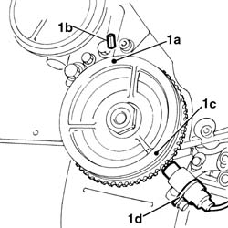
Applies to: all engines; all production periods
1. Undo the bolts (1a) and remove the timing drive belt guard (1b).
2. Loosen the timing belt tensioner nut.
3. Remove the toothed timing drive belt.
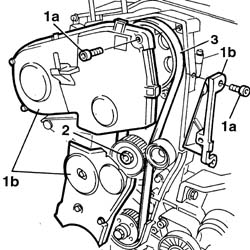
Applies to: all engines; all production periods
1. Turn the timing control toothed pulley so that the timing notches are aligned.
2. Check that the timing reference on the timing driven pulley is aligned with the reference on the cylinder head.
3. Loosen the moving timing belt tensioner nut.
4. Remove the timing belt.
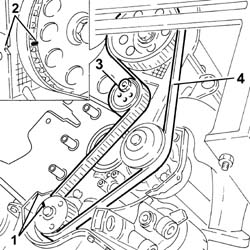
Applies to: all engines; all production periods
1. Undo the retaining bolts.
2. Remove the timing belt single shield.
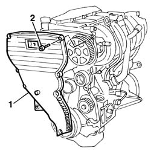
Applies to: all engines; all production periods
Refitting
Removing1. Remove the engine oil pump retaining bolt.
2. Fit the timing belt on the crankshaft gear only.
3. Fit the pin for the tool for positioning the engine at T.D.C.
4. Turn the crankshaft a little at a time to allow locating dowel (4a) on the pulley to fit into the hole on tool (4b).
 | Name | Country |
|---|---|---|
3 | Template | 1.860.905.000 |
5. Lock the tool in position using a nut (5a) and ordinary bolt (5b).
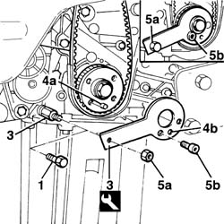
Applies to: all engines; all production periods
Refitting
RemovingCheck that the timing references on the driven pulley and the drive pulley are still aligned during the removal.
1. Fit the timing belt.
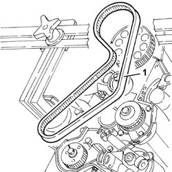
Applies to: all engines; all production periods
1. Fit the engine flywheel retaining tool.
2. Undo the nut securing the crankshaft pulley.
3. Remove the crankshaft pulley.
| Name | Country |
|---|---|---|
1 | Counter-torque | 1.860.846.000 |
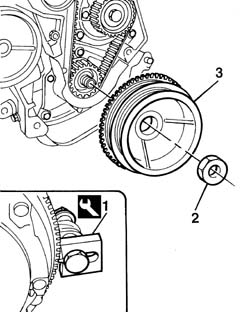
Applies to: all engines; all production periods
1. Check that the bolts fixing the injection pump pulley are slack, insert a cylindrical shaped centering pin (1a) with a 6 mm outer diameter long enough to allow it to be inserted about 40 mm into the opening (1b) in the pump shaft through the slot (1c) in the pulley. If the pin is not fully inserted, rotate the injection pump shaft acting on the nut (1d) so that the openings coincide.
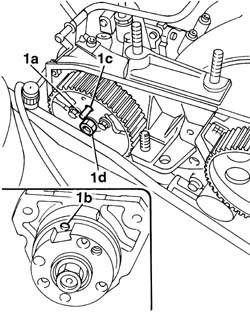
Applies to: all engines; all production periods
1. Fit tool (1a) and (1b) on timing belt mobile tensioner
| Name | Country |
|---|---|---|
1a | Belt tensioner | 1.860.745.300 |
| Name | Country |
|---|---|---|
1b | Belt tensioner | 1.860.745.100 |
Settle the timing control belt by rotating the crankshaft through two revolutions in its normal direction of rotation.
2. Tighten the nut for the timing control belt mobile tensioner to the recommended torque.
 | Fastening | Component | Ø | Value (daNm) |
|---|---|---|---|---|
2 | Nut | MOBILE TIMING TENSIONER | M8 x 1.25 | 2.8 |
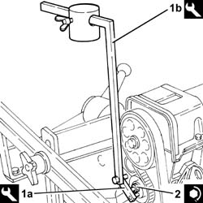
Applies to: all engines; all production periods
1. Undo the fixing nuts (1a) and remove the mounting bracket (1b) for the ignition coils.
2. Undo bolts (2a) and remove camshaft rear covers (2b)
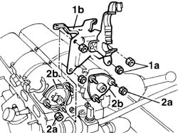
Applies to: all engines; all production periods
1. Complete the fitting of the timing belt following the instructions given.
2. Adjust the semi-automatic tensioner to bring the tensioner pointer (2a) to the maximum tension position, then lock nut (2b).
3. Stop the rotation of the injection pump pulley by inserting two M6 service bolts (3a) into the openings in the actual pulley which should correspond with the threaded openings in the pump mounting (timing correct). Tighten the bolts (3b) fixing the injection pump pulley to torque.
| Fastening | Component | Ø | Value (daNm) |
|---|---|---|---|---|
- | Bolt | INJECTION PUMP TOOTHED DRIVE PULLEY | M8 | 2.5 |
Remove the two ordinary bolts used for locking the injection pump pulley.
Remove the locating pin from the injection pump.
Remove the tool for checking T.D.C.
| Name | Country |
|---|---|---|
- | Template | 1.860.905.000 |
Rotate the crankshaft through two revolutions in its normal direction of rotation.
4. Slacken the nut securing the tensioner and carefully line up tensioner pointer (4a) with reference hole (4b), then tighten tensioner nut (4c) to torque.
| Fastening | Component | Ø | Value (daNm) |
|---|---|---|---|---|
4c | Nut | MOBILE TIMING TENSIONER | M8 | 2.5 |
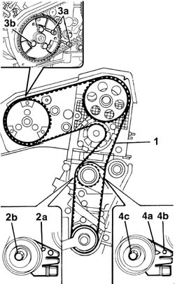
Applies to: all engines; all production periods
Refit the lower and upper guards for the timing control belt
Fit the auxiliary drivebelt pulley to the crankshaft and tighten the bolts to the recommended torque.
| Fastening | Component | Ø | Value (daNm) |
|---|---|---|---|---|
- | Bolt | CRANKSHAFT PULLEY | M8 x 1.25 | 2.2 |
Fit the rpm and TDC sensor and secure it using the bolt and reconnect the connection.
| Name | Connector |
|---|---|---|
- | RPM sensor | K46 |
Fit the engine oil dipstick
Applies to: all engines; all production periods
With the piston set to the recently obtained approximate TDC position, adjust the camshaft timing.
1. Position camshaft timing adjustment tools.
2. When fitting the tools, align shaft seat (2a) with key (2b) on the tools.
3. Tighten the tool retaining nuts.
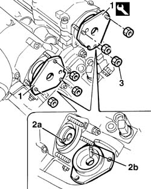
Applies to: all engines; all production periods
Rotate the crankshaft again through two revolutions in its normal direction of rotation.
Reposition the tool for determining T.D.C. for cylinder no. 1 and check that the centering pin engages in the opening in the injection pump (about 40 mm).
Fit the timing drive belt guards and fix them using the bolts.
Fit the engine component single drive belt guide pulley and fix it using the bolt.
Fit the crankshaft pulley.
Fit the single engine component belt by adjusting the automatic belt tensioner using a wrench.
Applies to: all engines; all production periods
1. Loosen the nut fixing the automatic belt tensioner.
2. Remove the timing drive belt.
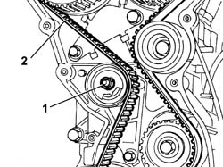
Applies to: all engines; all production periods
Refitting
Removing1. Using the securing tools (1a) and (1b), loosen the bolts (1c) fixing the timing pullies.
| Name | Country |
|---|---|---|
1a | Counter-torque | 1.860.831.001 |
| Name | Country |
|---|---|---|
1a | Adaptor | 1.860.885.000 |
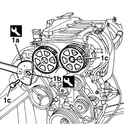
Applies to: all engines; all production periods
Remove the spark plugs from their sockets on the cylinder head.
1. Position a dial gauge (1a), supported by a pointer (1b) in the housing for the spark plug for cylinder no. 1. Turn the crankshaft with small, even movements until the dial gauge shows the cylinder no. 1 piston is at TDC.
| Name | Country |
|---|---|---|
1b | Probe mount | 1.860.895.000 |
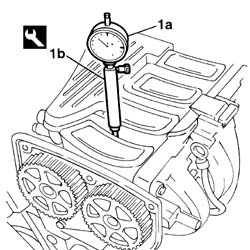
Applies to: all engines; all production periods
1. Proceed with fitting the timing drive belt, fitting it initially on the crankshaft gear (1a), the oil pump gear (1b), the fixed pulley (1c), the inlet camshaft pulley (1d), the exhaust camshaft pulley (1e) and, lastly, on the automatic tensioner (1f).
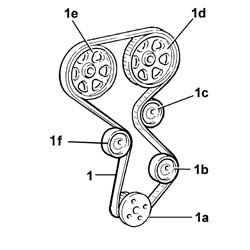
Applies to: all engines; all production periods
1. Undo retaining bolts
2. Position the toothed belt tensioning tool.
| Name | Country |
|---|---|---|
2 | Belt tensioner | 1.860.876.000 |
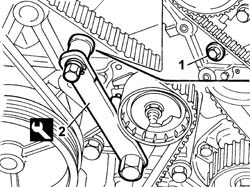
Applies to: all engines; all production periods
1. Adjust the tool until the belt is as taut as possible, i.e. when the moving belt tensioner pointer is at the end of its travel.
2. Tighten the tensioner retaining nut.
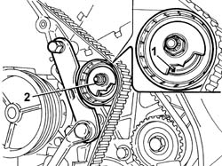
Applies to: all engines; all production periods
Use the pulley tightening tool to tighten the camshaft pulley retaining bolts to the specified torque.
| Fastening | Component | Ø | Value (daNm) |
|---|---|---|---|---|
- | Bolt | TIMING GEAR DRIVEN PULLEYS | M12 | 12 |
| Name | Country |
|---|---|---|
1a | Counter-torque | 1.860.831.001 |
| Name | Country |
|---|---|---|
1a | Counter-torque | 1.860.831.001 |
Remove the camshaft timing tools.
| Name | Country |
|---|---|---|
- | Template | 1.860.874.000 |
Remove the dial gauge together with the probe.
| Name | Country |
|---|---|---|
- | Probe mount | 1.860.895.000 |
Rotate the crankshaft through two revolutions in its normal direction of rotation.
1. Loosen the belt tensioner retaining nut and use tool (1a) to slightly release belt tension until moving reference (1b) is aligned with fixed reference (1c) on the tensioning device.
2. Tighten the tensioning device retaining nut to the specified torque.
| Name | Country |
|---|---|---|
1a | Belt tensioner | 1.860.876.000 |
| Fastening | Component | Ø | Value (daNm) |
|---|---|---|---|---|
2 | Nut | MOBILE TIMING TENSIONER | M8 | 2.5 |
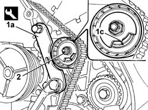
Applies to: all engines; all production periods
Remove the tool and tighten the retaining bolt removed previously to the specified torque in order to fit the tensioning tool.
Fit the camshaft rear covers.
Fit the support for the ignition coils, tightening the nuts fixing the support and the covers to torque.
| Fastening | Component | Ø | Value (daNm) |
|---|---|---|---|---|
- | Nut | INTAKE AND EXHAUST CAMSHAFT REAR COVER | M6 | 0.9 |
Position the flywheel retainer.
| Name | Country |
|---|---|---|
- | Counter-torque | 1.860.846.000 |
Fit the crankshaft pulley with its phonic wheel.
Tighten the pulley retaining nut to torque.
| Fastening | Component | Ø | Value (daNm) |
|---|---|---|---|---|
- | Nut | CRANKSHAFT PULLEY | M20 | 19 |
Remove the flywheel lock.
Fit the timing belt single shield.
Fit the mounting bracket for the ignition coils, tightening the fixing nuts to torque.
| Fastening | Component | Ø | Value (daNm) |
|---|---|---|---|---|
- | Nut | INTAKE AND EXHAUST CAMSHAFT REAR COVER | M6 | 0.9 |
Fit the ignition coils, tightening the fixing bolts to torque.
| Fastening | Component | Ø | Value (daNm) |
|---|---|---|---|---|
- | Bolt | IGNITION COIL/REEL | M6 | 0.9 |
Connect the electrical connections for the spark plugs and the ignition coils.
| Name | Connector |
|---|---|---|
- | Ignition 'coil | A30 |